第 1 题
新能源相关说法
题目与已知条件
近年来，我国新能源产业得到了蓬勃发展，下列说法错误的是
所用高中知识
新能源特点；燃料电池；锂离子电池的嵌入/脱嵌；能量转化形式。
读题与思路
逐项判断能量转化类型。
分步解析
- A、B表述正确。
- 锂离子电池放电时Li⁺从负极（石墨）脱出嵌入正极，充电时相反，C正确。
- 太阳能电池把光能直接转化为电能，不是化学能，D错误。
答案
D
检查与易错点
太阳能电池（光伏）与原电池不同，不发生化学反应。
本题来源：doc-hunan-q
2024年普通高中学业水平选择性考试（湖南卷）化学
18 题 · 全文材料 · 完整题干 · 独立推导
湖南2024年化学为本省自主命题的湖南卷，共18题：单选1—14（每题3分，共42分），非选择题15—18。本册替换此前误收的全国新课标理综化学部分。
题文、表格与图依据用户所附《2024年高考真题——化学（湖南卷）Word版无答案》逐题转录，第18题第（4）问（无答案版缺失）据同卷含解析版补全；公式由原文件公式对象逐一核对。全部答案独立推导后与所附参考答案交叉核对：选择题全部一致；第15（6）题按参考答案取乙醇，并说明理由。
阅读材料全文
2024年普通高中学业水平选择性考试（湖南卷） 化学试题
可能用到的相对原子质量：H 1 C 12 N 14 O 16 Cl 35.5 Cu 64
一、选择题：本题共14小题，每小题3分，共42分。在每小题给出的四个选项中，只有一项是符合题目要求的。
相关题目：第 1 题 · 第 2 题 · 第 3 题 · 第 4 题 · 第 5 题 · 第 6 题 · 第 7 题 · 第 8 题 · 第 9 题 · 第 10 题 · 第 11 题 · 第 12 题 · 第 13 题 · 第 14 题
第 1 题
近年来，我国新能源产业得到了蓬勃发展，下列说法错误的是
新能源特点；燃料电池；锂离子电池的嵌入/脱嵌；能量转化形式。
逐项判断能量转化类型。
D
太阳能电池（光伏）与原电池不同，不发生化学反应。
本题来源：doc-hunan-q
第 2 题
下列化学用语表述错误的是
电子式；基团结构简式；水分子极性与离子水合；σ键“头碰头”重叠。
重点看水合离子图中水分子的取向与离子大小。
C
判断水合离子先看电荷：阳离子吸引O端，阴离子吸引H端。
本题来源：doc-hunan-q
第 3 题
下列实验事故的处理方法不合理的是
| 实验事故 | 处理方法 | |
|---|---|---|
| A | 被水蒸气轻微烫伤 | 先用冷水处理，再涂上烫伤药膏 |
| B | 稀释浓硫酸时，酸溅到皮肤上 | 用3%～5%的NaHCO₃溶液冲洗 |
| C | 苯酚不慎沾到手上 | 先用乙醇冲洗，再用水冲洗 |
| D | 不慎将酒精灯打翻着火 | 用湿抹布盖灭 |
实验安全规范。
逐项对照规范处理方法。
B
浓酸沾皮肤：先大量水冲，再涂稀NaHCO₃。
本题来源：doc-hunan-q
第 4 题
下列有关化学概念或性质的判断错误的是
分子空间构型；杂化方式与键能；质谱分子离子峰；离子液体。
C—H键中碳的杂化不同，键能不同。
B
“同为C—H键”不意味着键能相同，杂化轨道成分影响键长与键能。
本题来源：doc-hunan-q
第 5 题
组成核酸的基本单元是核苷酸，下图是核酸的某一结构片段，下列说法错误的是
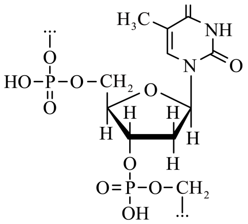
核酸的组成：碱基、戊糖、磷酸；DNA与RNA的差异。
DNA含T、RNA含U，碱基不完全相同。
A
DNA与RNA的差异有两处：戊糖和一种碱基（T/U）。
本题来源：doc-hunan-q
第 6 题
下列过程中，对应的反应方程式错误的是
| 过程 | 反应方程式 | |
|---|---|---|
| A | 《天工开物》记载用炉甘石(ZnCO₃)火法炼锌 | 2ZnCO₃ + C ══(高温)══ 2Zn + 3CO↑ |
| B | CaH₂用作野外生氢剂 | CaH₂ + 2H₂O ══ Ca(OH)₂ + 2H₂↑ |
| C | 饱和Na₂CO₃溶液浸泡锅炉水垢 | CaSO₄(s) + CO₃²⁻(aq) ⇌ CaCO₃(s) + SO₄²⁻(aq) |
| D | 绿矾(FeSO₄·7H₂O)处理酸性工业废水中的Cr₂O₇²⁻ | 6Fe²⁺ + Cr₂O₇²⁻ + 14H⁺ ══ 6Fe³⁺ + 2Cr³⁺ + 7H₂O |
原子守恒、电子守恒；沉淀转化。
逐个核对原子守恒。
A
先数原子是否守恒，再判断反应合理性。
本题来源：doc-hunan-q
第 7 题
某学生按图示方法进行实验，观察到以下实验现象：
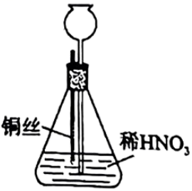
①铜丝表面缓慢放出气泡，锥形瓶内气体呈红棕色；
②铜丝表面气泡释放速度逐渐加快，气体颜色逐渐变深；
③一段时间后气体颜色逐渐变浅，至几乎无色；
④锥形瓶中液面下降，长颈漏斗中液面上升，最终铜丝与液面脱离接触，反应停止。
下列说法正确的是
铜与稀硝酸生成NO；NO与O₂、NO₂与水的反应；简易启普原理。
锥形瓶中原有空气，NO被氧化为红棕色NO₂；之后NO₂溶于水又生成NO。
C
反应停止是“固液分离”造成的，不是反应物耗尽。
本题来源：doc-hunan-q
第 8 题
为达到下列实验目的，操作方法合理的是
| 实验目的 | 操作方法 | |
|---|---|---|
| A | 从含有I₂的NaCl固体中提取I₂ | 用CCl₄溶解、萃取、分液 |
| B | 提纯实验室制备的乙酸乙酯 | 依次用NaOH溶液洗涤、水洗、分液、干燥 |
| C | 用NaOH标准溶液滴定未知浓度的CH₃COOH溶液 | 用甲基橙作指示剂进行滴定 |
| D | 从明矾过饱和溶液中快速析出晶体 | 用玻璃棒摩擦烧杯内壁 |
物质分离提纯；酸碱滴定指示剂选择；结晶操作。
逐项检查操作是否能达到目的。
D
强碱滴定弱酸选酚酞，强酸滴定弱碱选甲基橙。
本题来源：doc-hunan-q
第 9 题
通过理论计算方法优化了P和Q的分子结构，P和Q呈平面六元并环结构，原子的连接方式如图所示，下列说法错误的是
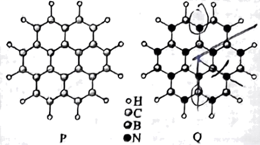
分子极性与对称性；第一电离能；等电子关系；杂化方式。
B—N单元与C—C单元电子数相同；判断Q中B、N交替分布后整体是否仍高度对称。
A
含极性键的分子不一定是极性分子，关键看空间对称性。
本题来源：doc-hunan-q
第 10 题
在KOH水溶液中，电化学方法合成高能物质K₄C₆N₁₆时，伴随少量O₂生成，电解原理如图所示，下列说法正确的是
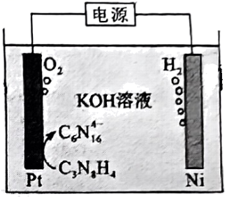
电解池中离子迁移方向；电极反应式书写；得失电子守恒。
Pt极上C₃N₈H₄被氧化（阳极），Ni极放出H₂（阴极）。
B
有副反应时，产物物质的量不能简单按主反应电子守恒计算。
本题来源：doc-hunan-q
第 11 题
中和法生产Na₂HPO₄·12H₂O的工艺流程如下：
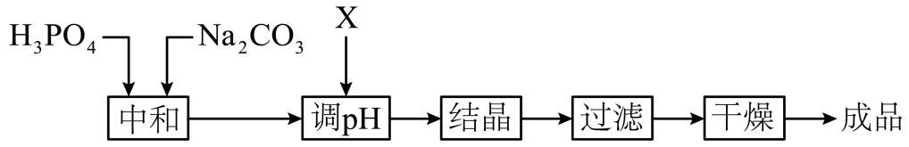
已知：①H₃PO₄的电离常数：，，
②Na₂HPO₄·12H₂O易风化。
下列说法错误的是
酸式盐溶液酸碱性的判断（水解与电离程度比较）；风化。
比较HPO₄²⁻的水解常数与电离常数 。
C
判断酸式盐溶液酸碱性，用 与 比较。
本题来源：doc-hunan-q
第 12 题
Li₂CN₂是一种高活性的人工固氮产物，其合成反应为 2LiH + C + N₂ ══(高温)══ Li₂CN₂ + H₂，晶胞如图所示，下列说法错误的是
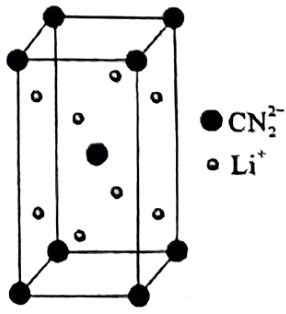
氧化还原分析；均摊法；等电子体与分子构型。
CN₂²⁻与CO₂互为等电子体。
D
等电子体结构相似，可用熟悉的CO₂推断。
本题来源：doc-hunan-q
第 13 题
常温下 ，向20 mL 0.10 mol·L⁻¹ NaOH溶液中缓慢滴入相同浓度的HCOOH溶液，混合溶液中某两种离子的浓度随加入HCOOH溶液体积的变化关系如图所示，下列说法错误的是
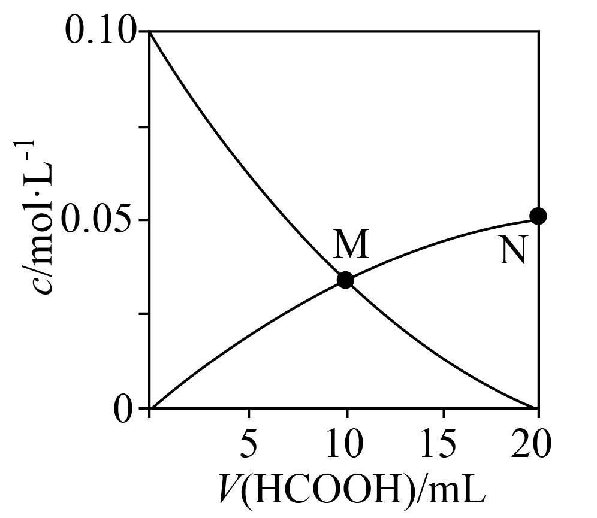
电荷守恒、物料守恒；盐类水解；水的电离。
下降曲线为OH⁻，上升曲线为HCOO⁻；M点二者相等，N点恰好完全反应生成HCOONa。
D
强碱弱酸盐溶液中，水解生成的弱酸分子浓度远大于H⁺浓度。
本题来源：doc-hunan-q
第 14 题
恒压下，向某密闭容器中充入一定量的CH₃OH(g)和CO(g)，发生如下反应：
主反应：CH₃OH(g) + CO(g) ══ CH₃COOH(g) ΔH₁
副反应：CH₃OH(g) + CH₃COOH(g) ══ CH₃COOCH₃(g) + H₂O(g) ΔH₂
在不同温度下，反应达到平衡时，测得两种含碳产物的分布分数δ 随投料比x(物质的量之比)的变化关系如图所示，下列说法正确的是
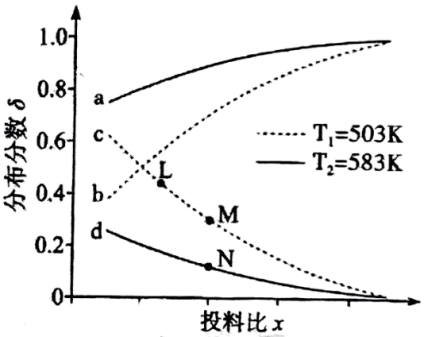
化学平衡移动；分布分数；平衡常数只与温度有关。
同温下两条曲线之和为1（a与d为T₂，b与c为T₁）。先讨论x的含义，再看温度影响。
D
平衡常数只随温度变化，同温度下的L、M两点K相等；本题需结合四个选项的互斥关系确定x的含义。
本题来源：doc-hunan-q
阅读材料全文
二、非选择题：本题共4小题，共58分。
第 15 题
亚铜配合物广泛用作催化剂。实验室制备[Cu(CH₃CN)₄]ClO₄的反应原理如下：
Cu(ClO₄)₂·6H₂O + Cu + 8CH₃CN ══ 2[Cu(CH₃CN)₄]ClO₄ + 6H₂O
实验步骤如下：
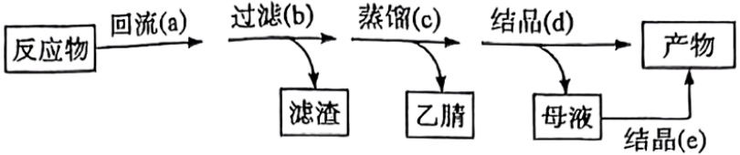
分别称取3.71 g Cu(ClO₄)₂·6H₂O和0.76 g Cu粉置于100 mL乙腈(CH₃CN)中反应，回流装置图和蒸馏装置图(加热、夹持等装置略)如下：
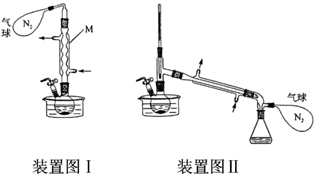
已知：①乙腈是一种易挥发的强极性配位溶剂；
②相关物质的信息如下：
| 化合物 | [Cu(CH₃CN)₄]ClO₄ | Cu(ClO₄)₂·6H₂O |
|---|---|---|
| 相对分子质量 | 327.5 | 371 |
| 在乙腈中颜色 | 无色 | 蓝色 |
回答下列问题：
（1）下列与实验有关的图标表示排风的是______(填标号)；
A． B． C． D．
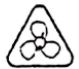
E．（2）装置Ⅰ中仪器M的名称为______；
（3）装置Ⅰ中反应完全的现象是______；
（4）装置Ⅰ和Ⅱ中N₂气球的作用是______；
（5）[Cu(CH₃CN)₄]ClO₄不能由步骤c直接获得，而是先蒸馏至接近饱和，再经步骤d冷却结晶获得。这样处理的目的是______；
（6）为了使母液中的[Cu(CH₃CN)₄]ClO₄结晶，步骤e中向母液中加入的最佳溶剂是______(填标号)；
A．水 B．乙醇 C．乙醚
（7）合并步骤d和e所得的产物，总质量为5.32 g，则总收率为______(用百分数表示，保留一位小数)。
实验安全图标；仪器识别；Cu(Ⅰ)的还原性与保护气；结晶方法；产率计算。
产物中Cu为+1价易被氧化；Cu(ClO₄)₂溶液蓝色、产物无色，可作终点判断；Cu粉过量，以Cu(ClO₄)₂·6H₂O计算理论产量。
（1）D （2）球形冷凝管 （3）溶液蓝色褪去变为无色 （4）排出并隔绝空气，防止产品被氧化 （5）防止产品受热分解或被氧化及杂质析出，冷却结晶得到较纯产品 （6）B （7）81.2%
产率计算要先判断过量：Cu粉过量，以Cu(ClO₄)₂·6H₂O为准，且1 mol得到2 mol产物。
本题来源：doc-hunan-q
第 16 题
铜阳极泥(含有Au、Ag₂Se、Cu₂Se、PbSO₄等)是一种含贵金属的可再生资源，回收贵金属的化工流程如下：
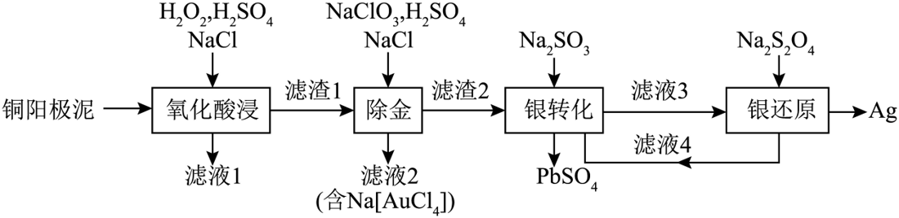
已知：①当某离子的浓度低于 mol·L⁻¹时，可忽略该离子的存在；
②AgCl(s) + Cl⁻(aq) ⇌ [AgCl₂]⁻(aq) ；
③Na₂SO₃易从溶液中结晶析出；
④不同温度下Na₂SO₃的溶解度如下：
| 温度/℃ | 0 | 20 | 40 | 60 | 80 |
|---|---|---|---|---|---|
| 溶解度/g | 14.4 | 26.1 | 37.4 | 33.2 | 29.0 |
回答下列问题：
（1）Cu属于______区元素，其基态原子的价电子排布式为______；
（2）“滤液1”中含有Cu²⁺和H₂SeO₃，“氧化酸浸”时Cu₂Se反应的离子方程式为______；
（3）“氧化酸浸”和“除金”工序均需加入一定量的NaCl：
①在“氧化酸浸”工序中，加入适量NaCl的原因是______。
②在“除金”工序溶液中，Cl⁻浓度不能超过______mol·L⁻¹。
（4）在“银转化”体系中，[Ag(SO₃)₂]³⁻和[Ag(SO₃)₃]⁵⁻浓度之和为0.075 mol·L⁻¹，两种离子分布分数δ随SO₃²⁻浓度的变化关系如图所示，若SO₃²⁻浓度为1.0 mol·L⁻¹，则[Ag(SO₃)₃]⁵⁻的浓度为______mol·L⁻¹。
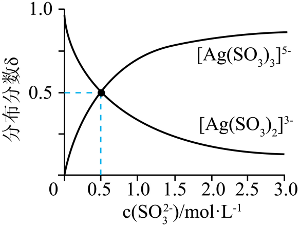
（5）滤液4中溶质主要成分为______(填化学式)；在连续生产的模式下，“银转化”和“银还原”工序需在40℃左右进行，若反应温度过高，将难以实现连续生产，原因是______。
元素分区与价电子排布；氧化还原方程式配平；沉淀溶解平衡与配位平衡计算；分布分数图像。
根据流程判断各步物质去向，用平衡常数计算浓度限制。
（1）ds； （2）Cu₂Se + 4H₂O₂ + 4H⁺ ══ 2Cu²⁺ + H₂SeO₃ + 5H₂O （3）①使银元素转化为AgCl沉淀 ②0.5 （4）0.05 （5）Na₂SO₃；温度高于40℃后Na₂SO₃溶解度下降而析出，循环液浓度不足
Cu₂Se中Cu和Se两种元素都被氧化，配平时要同时计入。
本题来源：doc-hunan-q
第 17 题
化合物H是一种具有生物活性的苯并呋喃衍生物，合成路线如下(部分条件忽略，溶剂未写出)：
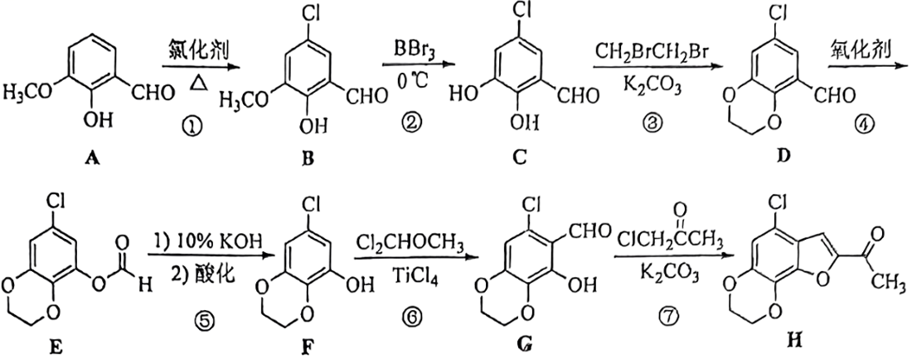
回答下列问题：
（1）化合物A在核磁共振氢谱上有______组吸收峰；
（2）化合物D中含氧官能团的名称为______、______；
（3）反应③和④的顺序不能对换的原因是______；
（4）在同一条件下，下列化合物水解反应速率由大到小的顺序为______(填标号)；
①
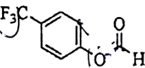
②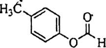
③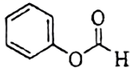
（5）化合物G→H的合成过程中，经历了取代、加成和消去三步反应，其中加成反应的化学方程式为______；
（6）依据以上流程信息，结合所学知识，设计以和Cl₂CHOCH₃为原料合成
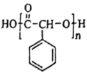
的路线______(HCN等无机试剂任选)。等效氢；官能团识别；保护基思想；取代基电子效应对酯水解速率的影响；羟醛加成与消去；合成路线设计。
逐步比较前后结构确定各步反应；④是把醛基氧化成甲酸酯（再水解成酚）的步骤，会氧化酚羟基。
（1）6 （2）醛基、醚键 （3）先成环醚可防止酚羟基在④中被氧化 （4）①>③>② （5）芳基—O—CH₂COCH₃（邻位有—CHO）分子内加成生成2-乙酰基-3-羟基-2,3-二氢苯并呋喃 （6）苯→（Cl₂CHOCH₃/TiCl₄）苯甲醛→（HCN）α-羟基苯乙腈→（H₃O⁺）扁桃酸→缩聚
反应⑥的Cl₂CHOCH₃/TiCl₄是在芳环上引入醛基的方法，第（6）问正是借用这一步；酯水解速率看离去的酚氧负离子稳定性。
本题来源：doc-hunan-q
第 18 题
丙烯腈(CH₂=CHCN)是一种重要的化工原料。工业上以N₂为载气，用TiO₂作催化剂生产CH₂=CHCN的流程如下：
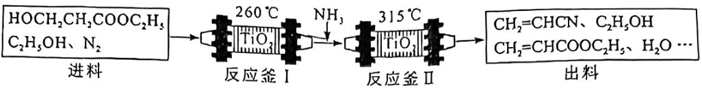
已知：①进料混合气进入两釜的流量恒定，两釜中反应温度恒定；
②反应釜Ⅰ中发生的反应：
ⅰ：HOCH₂CH₂COOC₂H₅(g) → CH₂=CHCOOC₂H₅(g) + H₂O(g) ΔH₁
③反应釜Ⅱ中发生的反应：
ⅱ：CH₂=CHCOOC₂H₅(g) + NH₃(g) → CH₂=CHCONH₂(g) + C₂H₅OH(g) ΔH₂
ⅲ：CH₂=CHCONH₂(g) → CH₂=CHCN(g) + H₂O(g) ΔH₃
④在此生产条件下，酯类物质可能发生水解。
回答下列问题：
（1）总反应 HOCH₂CH₂COOC₂H₅(g) + NH₃(g) → CH₂=CHCN(g) + C₂H₅OH(g) + 2H₂O(g) ΔH=______(用含ΔH₁、ΔH₂和ΔH₃的代数式表示)；
（2）进料混合气中 n(HOCH₂CH₂COOC₂H₅)∶n(C₂H₅OH)=1∶2，出料中四种物质(CH₂=CHCOOC₂H₅、CH₂=CHCN、C₂H₅OH、H₂O)的流量(单位时间内出料口流出的物质的量)随时间变化关系如图：
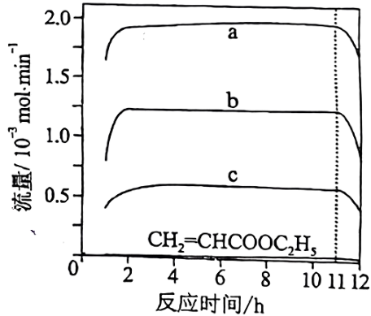
①表示CH₂=CHCN的曲线是______(填“a”“b”或“c”)；
②反应釜Ⅰ中加入C₂H₅OH的作用是______。
③出料中没有检测到CH₂=CHCONH₂的原因是______。
④反应11 h后，a、b、c曲线对应物质的流量逐渐降低的原因是______。
（3）催化剂TiO₂再生时会释放CO₂，可用氨水吸收获得NH₄HCO₃。现将一定量的NH₄HCO₃固体(含0.72 g水)置于密闭真空容器中，充入CO₂和NH₃，其中CO₂的分压为100 kPa，在27℃下进行干燥。为保证NH₄HCO₃不分解，NH₃的分压应不低于______kPa（已知 ，NH₄HCO₃分解的平衡常数 ）；
（4）以CH₂=CHCN为原料，稀硫酸为电解液，Sn作阴极，用电解的方法可制得Sn(CH₂CH₂CN)₄，其阴极反应式为______。
盖斯定律；化学计量与图像分析；平衡移动；催化剂失活；分压平衡常数；电极反应式。
按计量关系比较出料流量；用 与 的关系确定不分解的条件。
（1）ΔH₁+ΔH₂+ΔH₃ （2）①c ②降低分压使反应ⅰ正向移动，并抑制酯的水解 ③CH₂=CHCONH₂在反应釜Ⅱ中全部转化为CH₂=CHCN ④催化剂活性降低（中毒、积碳），反应速率减小 （3）40 （4）Sn + 4CH₂=CHCN + 4e⁻ + 4H⁺ ══ Sn(CH₂CH₂CN)₄
（3）中水的分压由题给经验关系计算；“不分解”对应 。
本题来源：doc-hunan-q